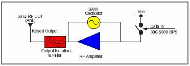
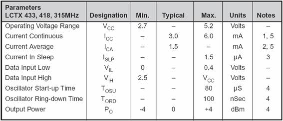
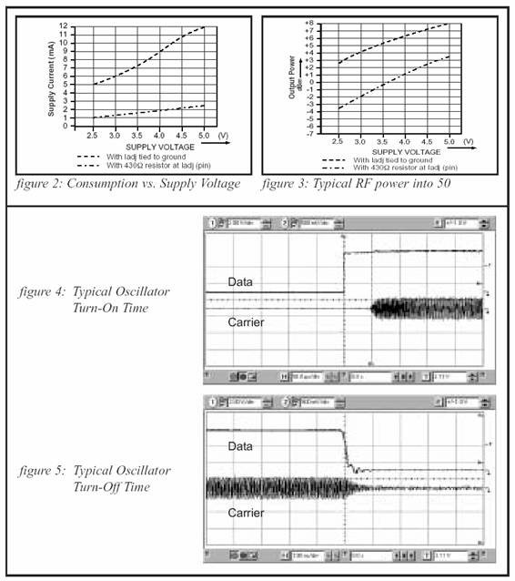
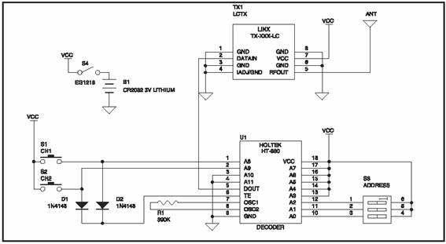
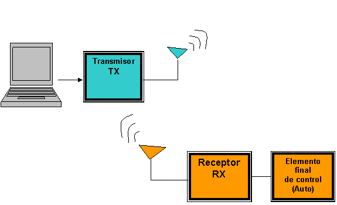
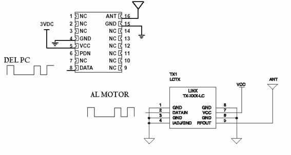

REPUBLICA BOLIVARIANA DE VENEZUELA
MINISTERIO DE LA DEFENSA
UNIVERSIDAD NACIONAL EXPERIMENTAL DE LA FUERZA ARMADA
NUCLEO MARACAY
Profesor: Ing. Camilo Duque Integrantes:
Cátedra: Sistemas Digitales II Guinand Isaac
López Jesús
Sucre José
Sección:
B
Maracay: Diciembre del 2004
Selección
Ø
Introducción:
La visión de un estudiante de ingeniería debe ser controlar todo proceso y con la mejor, mas versátil, y las sencilla tecnología. Siempre teniendo en mente que funcione adecuadamente para el propósito que se desea.
Un control remoto es un proyecto tanto ambicioso como funcional, se puede controlar todo un proceso en la comodidad de una estación sin la necesidad de ir al campo para tener que variar alguna variable que se tenga que ajustar y esto sin tomar en cuenta de que un control remoto es muy útil en aquellos casos donde por una razón u otra no se puede llegar a tener el acceso parcial o total al dicho proceso que se quiere controlar.
Este fue nuestro punto de partida para poder inclinarnos en la búsqueda de soluciones y facilidades que genera un control de mando a distancia.
Como el trabajo se enfocaba en el estudio de un circuito integrado en especifico, parece un poco más interesante y básico a la vez, hacer el estudio de el circuito integrado que forma parte principal de la parte transmisora.
Estudio
Ø Circuito integrado seleccionado:
TMX-315-LC
Ø Fabricante:
Linx Technologies
Ø Características claves:
o El integrado es sumamente compacto
o Bajo costo
o No requiere ningunos componentes externos de RF
o Un consumo de potencia muy bajo
o Soporta rata de datos a 5,000 bps
o Alcance de tensión de entrada de 2.7 VDC a 5.2 VDC
o La temperatura de operación esta desde los -30oC hasta 70oC
o Maneja frecuencias en el orden de 315 MHz
o
Soporta una corriente continua de
Ø Distribución de pines:
PIN 1: GND
Se conecta a la “Tierra de circuito” (Ground).
PIN 2: ENTRADA DE DATOS
Pin de entrada de datos (Serial). Compatible con TTL y CMOS.
PIN 3: GND
Se conecta a la “Tierra de circuito” (Ground).
PIN 4: LADJ/GND
Ajuste de nivel de energía. Según se conecte a tierra se tiene:
· Directamente: para operación con 3V.
· A través de una resistencia de 430Ω: para operación a 5V
PIN 5: SALIDA RF
Se conecta a una antena de 50Ω.
PIN 6: GND
Se conecta a la “Tierra de circuito” (Ground).
PIN 7: VCC (Alimentación positiva)
La fuente debe ser (< 20 mV pp), estable y liberar de ruido de alta frecuencia. Se recomienda un filtro de la fuente a este pin a menos que el módulo funcione desde sus propia fuente o batería regulada.
PIN 8: GND
Se conecta a la “Tierra de circuito” (Ground).
DIAGRAMA DE BLOQUES DEL CIRCUITO

TIPO DE ENCAPSULADO
El modulo de transmisión es empaquetado en un módulo de SMD (distribution module source) híbrido con ocho pines espaciados a 0.100" cada uno sobre el centro integrado. El paquete de SMD está equipado con materiales de aleación en los pines que permiten la introducción del integrado de soldadura. Este simplifica la creación de prototipos o ensamblaje a mano, mientras mantiene la compatibilidad con equipo en empresas automatizadas.
PARAMETROS BASICOS DE OPERACIÓN

OTROS PARAMETROS

Voltaje de
alimentación VCC, suministrado al pin 7 -0.3 a +6
VDC
Temperatura de
operación -30
oC a +70
oC
Temperatura de
almacenamiento -45
oC a +85
oC
Temperatura de
soldadura +
Nota: si se sobrepasa algunos de estos
límites de operación o se manejan los rangos máximos por un tiempo muy
prolongado puede causar el daño total del equipo.
DESCRIPCION DE FUNCIONAMIENTO
LC - TXM es un
transmisor de CPCA (mensajero - presente mensajero - ausente) muy económico y
de gran rendimiento capaz de enviar los datos en una rata de 5,000 partes /
segundo. El encapsulado del LC es muy compacto y se integra fácilmente en
diseños existentes y es equitativamente favorable al prototipo y a la
producción en volumen. El consumo de energía del LC es muy bajo lo que lo hace
perfectamente adecuado para la gama de productos activados por batería. Cuando
se combina con un receptor de serie de LC de Linx (un
enlace de RF seguro capaz de transferir los datos) sobre las distancias de
línea de alcance superior a
El funcionamiento del circuito es muy sencillo, posee una entrada de datos de forma serial los cuales a través de la antena de 50Ω conectada al pin 5; son transmitidos al aire, para la recepción es necesario tener un CI de la misma serie y fabricante.
APLICACIONES TIPICAS
· Control de mando a distancia.
· Garaje, (Puertas que se abren a distancia).
· Control de iluminación.
· Monitoreo medico (sistema de llamadas)
· Entrada de códigos de seguridad.
· Monitoreo remoto industrial.
· Transferencia de datos periódicos.
· Industria de la automatización.
· Alarmas de seguridad y de fuego.
· Sensado de posición.
CIRCUITO TIPICO DE APLICACIÓN

DISEÑO
DEFINICIÓN DEL PROBLEMA A RESOLVER.
Más que un problema, se ha planteado como la necesidad de entender y desarrollar proyectos que conlleven al alcance del conocimiento y la aplicación de lo ya conocido. De un modo u otro el problema en si al cual esta dirigida la investigación consiste en el control de mando a distancia, en este caso de un carrito (Robot). El cual permita accionarlo a distancia por medio de una computador; ya sea a traves del teclado u otro puerto de entrada de esta; como un jostyck.
DIAGRAMA DE BLOQUES DEL SISTEMA

CRITERIOS DE DISEÑO.
Para el diseño se escogieron técnicas de programación ya conocidas, al igual que conocimientos ya adquiridos con la posibilidad de ser mejorados a medida que vaya adelantando el nivel de aprendizaje de los integrantes así como la necesidad de conocimiento para el desarrollo del mismo.
Se escogió el transmisor TXM-315-LC, por su fácil manejo en la transmisión de datos, de la misma manera se cuenta con un CI de la misma familia LC como lo es el RXM-315-LC-S por ser compatible en el proceso de comunicación a distancia.
DESCRIPCION DEL FUNCIONAMIENTO
El proyecto consta de un carro controlado a distancia. Los comandos serán realizados a través de la computadora, usando un programa diseñado por nosotros mismo, utilizando las herramientas que nos proporciona le lenguaje de programación aprendido durante este termino. Los datos saldrán escribiendo en el puerto serial y de allí al transmisor, luego esa señal será recibida por el receptor la cual la presentara en modo serial entrara en un registro y se tendría la palabra de control para accionar el motor, bien sea para ir adelante, atrás, a la derecha o a la izquierda.
CIRCUITO

VIABILIDAD
Tanto el integrado de transmisión como el de recepción pueden ser adquiridos a través de la página web:
http://www.linxtechnologies.com/interface.php?section=company&category=contact_us
Ø
Disponibilidad
del circuito integrado:
El integrado TXM-315-LC esta disponible principalmente en el mercando norteamericano, a través de la empresa LINX Technologies ya antes descrita
.
Ø
Tiempo de
entrega:
La empresa LINX Technologies nos garantiza un tiempo de entrega de 4 días hábiles, desde el momento del pedido.
Ø
Costo
aproximado de los materiales a utilizar:
o Circuito integrado para la transmisión 12.500 Bs.
o Circuito integrado para la recepción 13.000 Bs.
o Circuito para la transmisión 21.000 Bs.
o Circuito para la recepción
§ CI para la recepción 13.000 Bs.
§ Registró 5.000 Bs.
§ Buffer 5.000 Bs.
o Carro a escala 40.000 Bs.
Total: 109.500
Bs.
Ø
Herramientas
de software:
Se trabajara con una herramienta de software para el medio
de transmisión, para ello se programara en Lenguaje
C++, otra herramienta con que contamos es Labview.
Ø
Herramientas
de hardware:
o Circuito integrado TXM-315-LC para la
transmisión
o Circuito integrado RXM-315-LC-S para la
recepción
o Computador personal
o Auto a escala
CONCLUSION
Un robot controlado a distancia es un diseño ambicioso sin embargo en el marco de proceso de enrriquesimiento de nuestros conocimientos nos hemos trazado la meta de desarrollarlo en el transcurso de la carrera.
La utilización del circuito que escogimos facilita el proceso de transmisión de los comandos para activar esta aplicación. Por su bajo costo y los beneficios que nos ofrece representa una alternativa viable y de fácil implementación.